Finca Viña Grande · Ciempozuelos · Borrador 23-11-2026
Así quedará la finca restaurada
La antigua gravera se rellena con tierras y materiales inertes hasta la cota que tenía el terreno antes de la extracción, según el estudio topográfico, y vuelve a ser tierra de cultivo, como las parcelas de la vega que la rodean. Todo parte del sitio real: la ortofoto oficial, el modelo del terreno del IGN y fotos tomadas en la finca. Desliza sobre cada imagen para comparar.
- Superficie
- 32,5 ha
- 324.831 m² en nueve parcelas
- Relleno
- 1,97 mill. m³
- tierras y materiales inertes
- Altura de relleno
- hasta 14 m
- en la zona central y norte
- Cota final
- 505–513 m
- la del terreno original
- Uso final
- Agrícola
- sin arbolado nuevo (BIC Salinas de Espartinas)
Fuente: Proyecto de control arqueológico INF/0218/2023 (GEA Arqueólogos, julio de 2026) y estudio topográfico de la explotación (septiembre de 2023).
01 Desde el aire
La gravera vuelve a ser vega
Toda la franja entre la vía del tren y la M-307 se rellena y queda dividida en parcelas de cultivo con sus caminos. La hilera de árboles de la cacera de riego se conserva.


Ortofoto PNOA 2023 (IGN), girada para que la finca quede en horizontal: el norte queda a la derecha. El ancho de la imagen son 1,8 km. Fuera del perímetro del relleno la imagen es la original.
Hasta dónde se rellena
El hueco se rellena hasta la cota que tenía el terreno antes de la extracción, según el modelo de reposición del estudio topográfico. Esa cota cambia en cada punto: de 505 metros junto a la M-307 a 513 metros en el norte, junto a la vía, con una pendiente suave hacia la vega. La vía queda entre 1 y 3 metros por encima, como ahora.
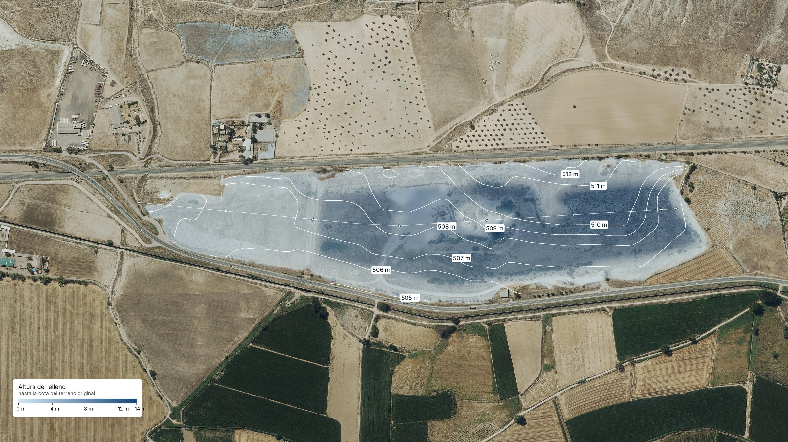
En azul, la altura de relleno en cada punto (de 0 a 14 m); en blanco, las curvas de la cota final cada metro. Las cotas salen del plano «Estado inicial teórico» del estudio topográfico y coinciden con su tabla de perfiles con un margen medio de 0,3 m.
02 El hueco
Lo que no se ve desde arriba
Maqueta del terreno real cortada por la parte más honda de la finca. Hoy, la cara del corte enseña el hueco de la gravera en las capas de limos, arenas y gravas. Restaurada, el hueco queda ocupado por el relleno, con la tierra vegetal y los cultivos encima.

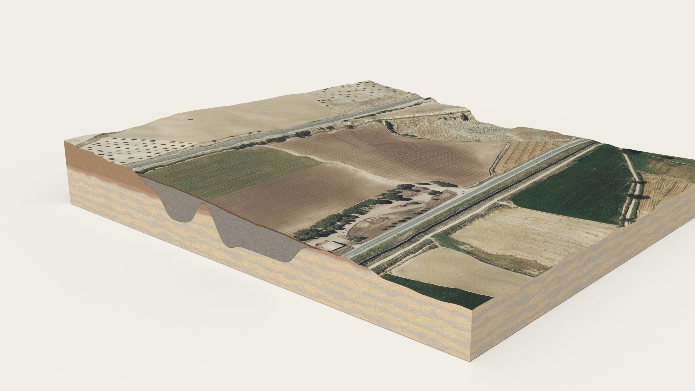
Modelo digital del terreno del IGN con la ortofoto PNOA 2023 encima. Tramo de 600 × 630 m. El relieve está exagerado tres veces para que se lea la profundidad; las capas del subsuelo son orientativas.
Cómo se rellena
El relleno sube por tongadas, extendidas y compactadas, hasta la cota del terreno original. Al final se extiende la tierra vegetal y la finca vuelve al cultivo.
Borrador en baja para validar la cámara y los tiempos; la versión final irá a más calidad.
03 En 3D
Como desde un dron
El terreno real en 3D, a escala, con la ortofoto encima. Restaurada, la franja entre la vía y la M-307 se lee como una parcela más de la vega.
Desde los cerros, hacia la vega del Jarama

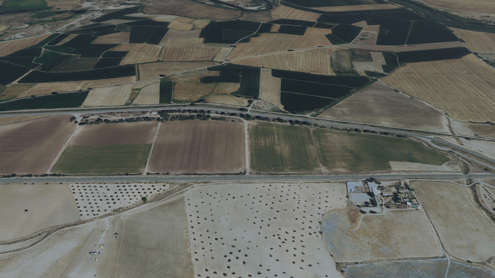
Desde la entrada de la M-307
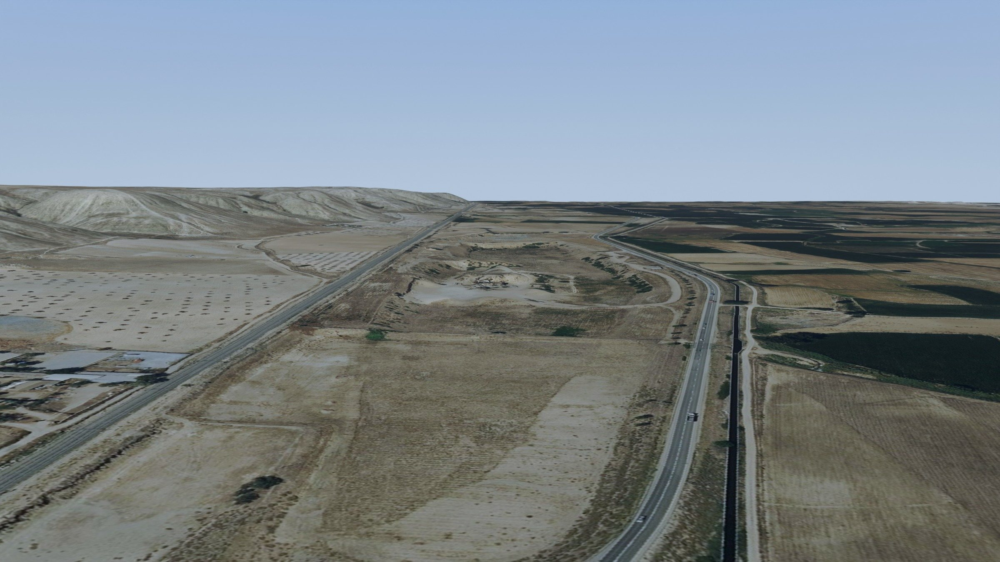
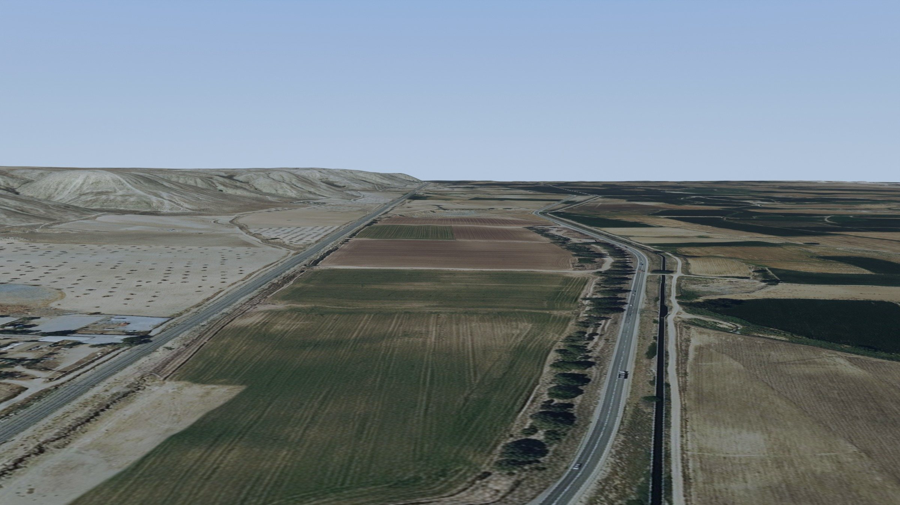
Modelo digital del terreno del IGN y ortofotos PNOA 2023, sin exagerar el relieve. La finca restaurada sigue las cotas del estudio topográfico.
04 A pie de finca
Las fotos de la visita
Fotos tomadas en la finca el 14 de octubre. En cada «después» solo cambia el suelo de la gravera: el cielo, los cerros, la vía y la arboleda son los píxeles originales de la cámara.
Mirando a la vía y a los cerros
El corte de la gravera, la explanada y las casetas desaparecen: el terreno sube hasta la cota original, al pie del terraplén de la vía, y queda una sola parcela sembrada.
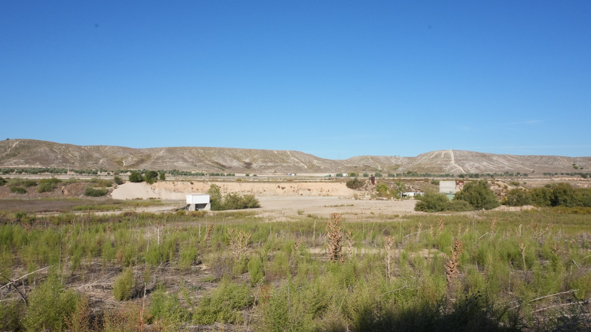
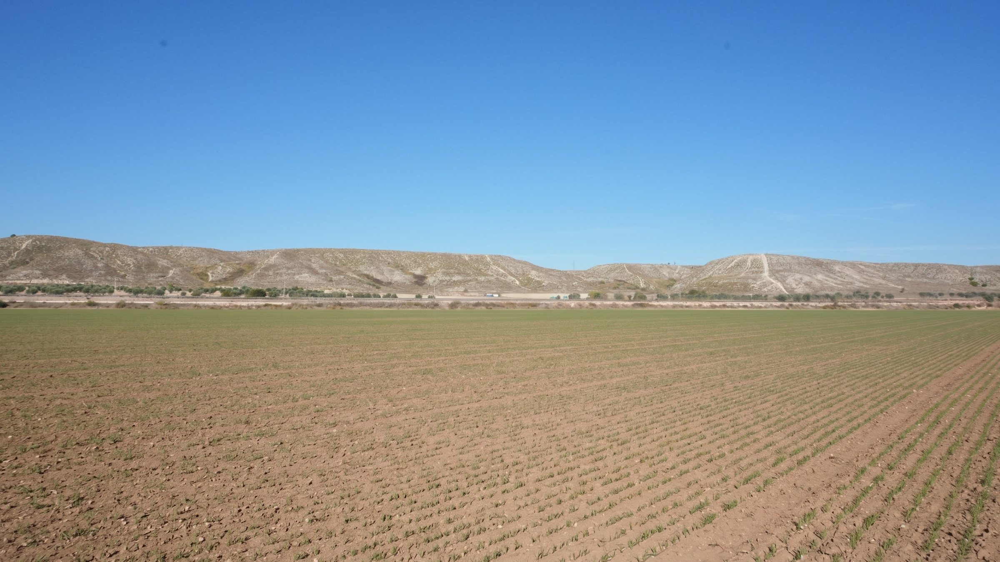
Desde la explanada de la entrada
La explanada de grava, los acopios y el matorral pasan a ser campo hasta la hilera de olivos de la vía.
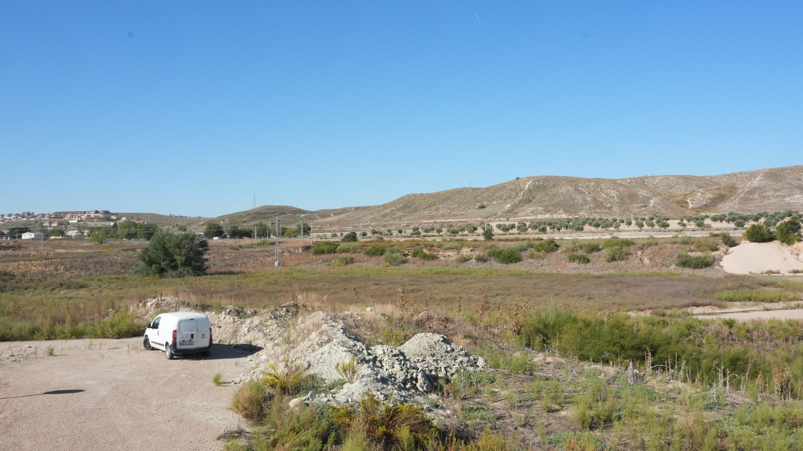
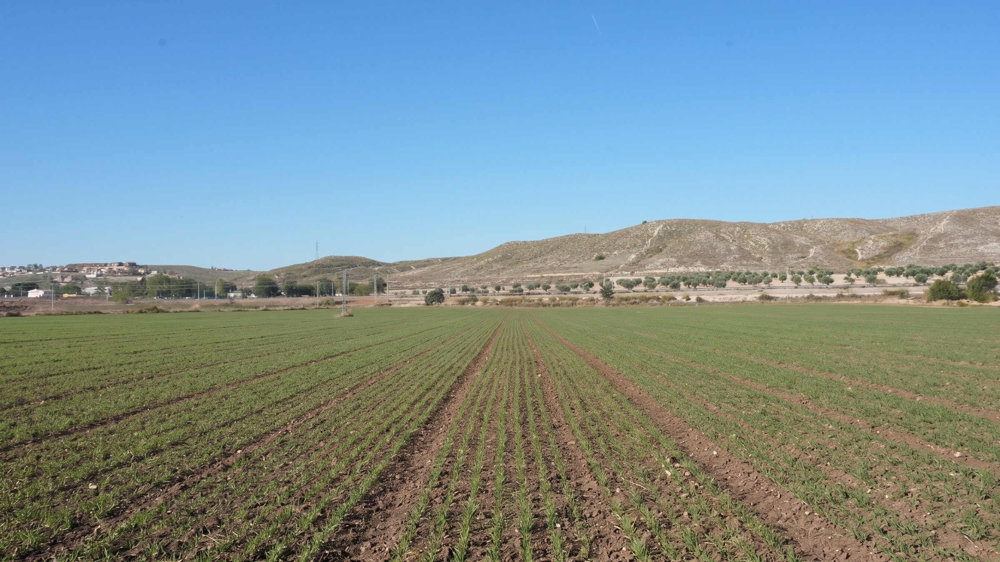
Hacia la vega del Jarama
Los caminos de la explotación y el matorral dejan paso a un campo de cereal a la altura de las parcelas de la vega.
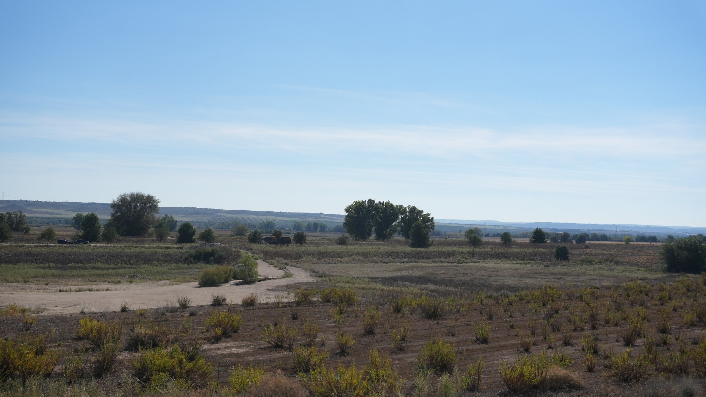
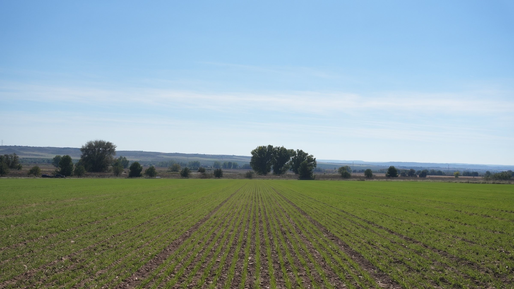
05 Aparte · Cierre perimetral
La finca, cerrada mientras se rellena
Un murete de hormigón con malla metálica encima rodea la finca, con una puerta corredera en la entrada de camiones de la M-307.
- Murete de hormigón
- 0,80 m
- de alto, 20 cm de grueso
- Malla de simple torsión
- hasta 2,00 m
- sobre el terreno, en verde
- Postes de acero
- cada 3 m
- en el mismo verde
- Puerta corredera
- 8 m
- en la entrada de camiones
Así es un tramo
De cerca, al pie del terraplén de la vía: el murete de hormigón abajo y la malla verde encima, tensada entre postes.
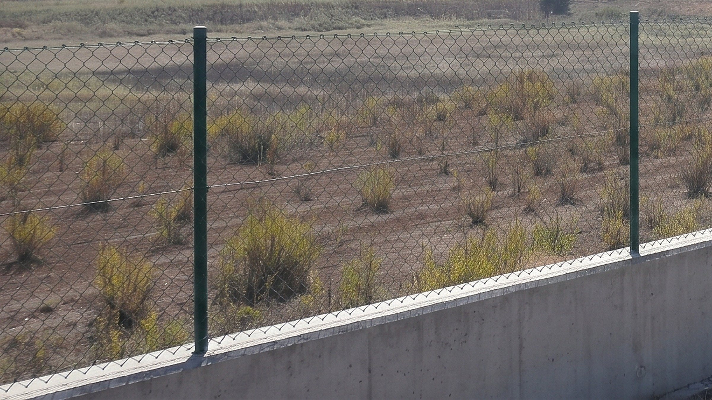
Desde la vía
El cierre al pie del terraplén de la vía, con la finca detrás.
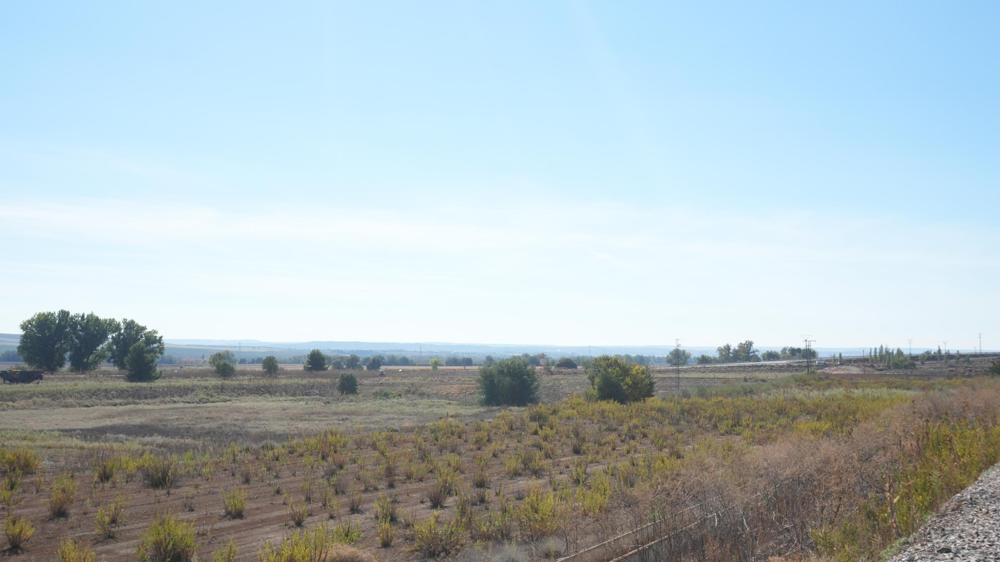
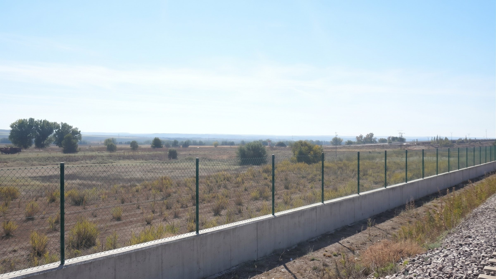
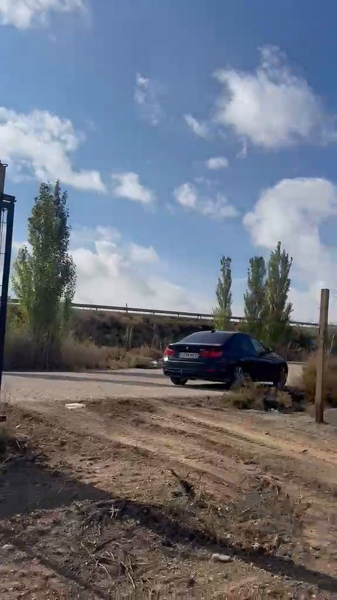
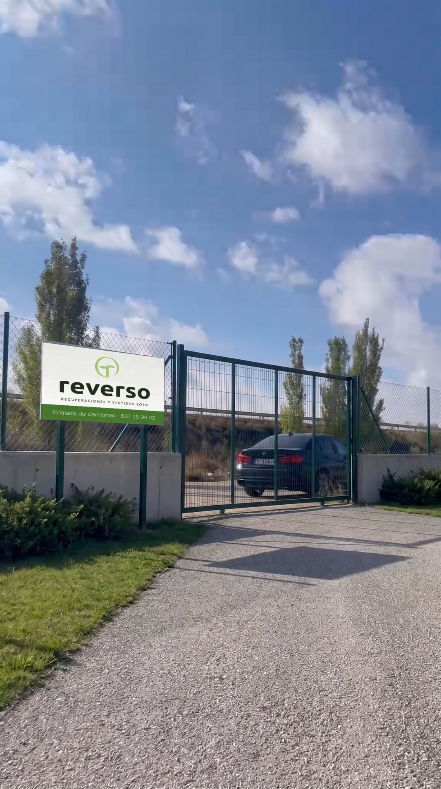
En la entrada
La salida a la M-307 con la puerta corredera nueva, el cartel de Reverso, un camino de zahorra del ancho de la puerta para los camiones y franjas de césped y setos bajos a los lados. Sin árboles nuevos, por estar en el BIC.
Fotomontajes sobre fotos reales de la finca. El cartel lleva el logo oficial de Reverso.
· Cómo están hechas
Las fotos y la ortofoto son reales. En cada «después» solo se ha cambiado el terreno de la gravera: en la vista aérea, dentro del perímetro del relleno del estudio topográfico; en las fotos, el suelo, conservando los píxeles originales del cielo, los cerros, la vía y la arboleda. El cereal que se ve es orientativo.
El 3D está hecho con el modelo digital del terreno del IGN. La finca restaurada sigue el modelo de reposición del estudio topográfico, curva a curva, y se ha comprobado contra su tabla de perfiles: la diferencia media es de 0,3 metros.